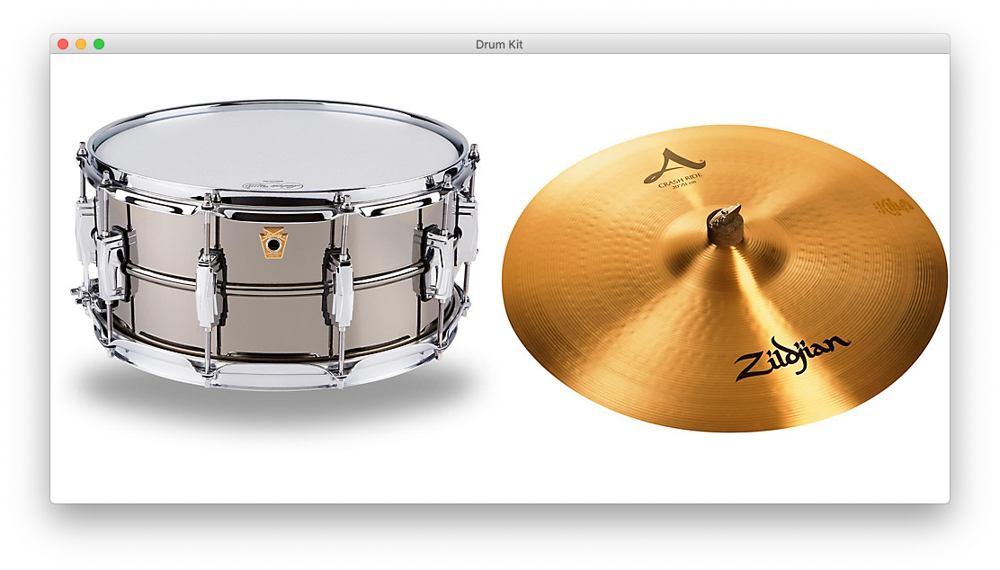
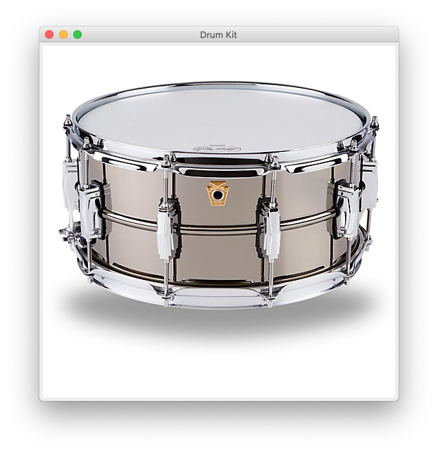

Drum Kit

Goal:
We are going to use GUI components to make drum kit. When different images of the drum kit are clicked, they will play appropriate sounds.
Steps:
- Create a JFrame. A JFrame is a window that has a border and title. It will contain one component of your GUI. In this program, it will contain a JPanel (see next). JFrames are invisible when you create them, so you will need to make it visible (follow instructions in the code).
- Create a JPanel and add it to the JFrame.
- Create a JLabel that shows the image of a drum (follow instructions in the code) and add it to the JPanel.
- Packing a JFrame causes it to resize itself so that its components are visible. If you do anything to change the size of its contents, a JFrame should be packed again.
- When you run the program you should see the drum 
- Add a MouseListener to the JLabel and complete the mouseClicked() method so that a drum sound is played when the drum image is clicked (follow instructions in the code).
- Repeat the above steps for a second JLabel that shows the image of a cymbal (follow instructions in the code).
- Your drum kit is complete!